Dungeons
Dungeons are group activities for a party of players. Members fight separately, whenever they play (offline time counts), and every member's kills count toward the room the party is in. The party moves on when a room is cleared, and loot is given out when the last room is cleared within the time limit.
The Ashvale Catacombs
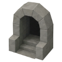
| Property | Value |
|---|---|
| Where | 🌾 Ashvale |
| Party | 2 to 4 players |
| Needs | Combat 20 · 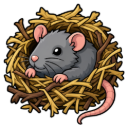 Rat's Nest ·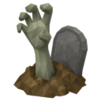 Bones of Ashvale ·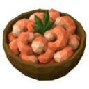 The Hollow Larder · Auto-Eat I |
| Recommended | Combat 20 to 40 |
| Time limit | 48 hours |
Rooms
| Room | Monster | To clear |
|---|---|---|
| The Ossuary Steps | 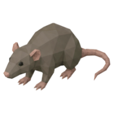 Crypt Rat | 25 kills per member |
| The Robbed Vaults | 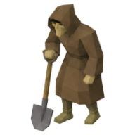 Grave Robber | 25 kills per member |
| The Gallery of Bows | 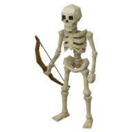 Bone Archer | 25 kills per member |
| The Feeding Pits | 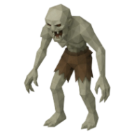 Catacomb Ghoul | 25 kills per member |
| The Barrow Hall | 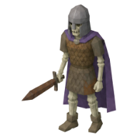 Barrow Wight | 25 kills per member |
| The Gravekeeper's Crypt | 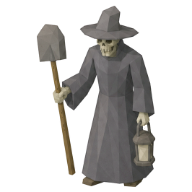 The Gravekeeper | 1 kill per member |
Loot
Loot is rolled for each member when the dungeon is cleared. A member who did an even share of the kills gets 5 rolls, and members who did more or less get more or fewer, between 2 and 10. A member with less than 5% of the party's kills gets nothing. Each roll gives one item from the table below. If the time limit runs out, the run ends and gives 50% of the loot for the rooms that were cleared.
| Item | Amount a roll |
|---|---|
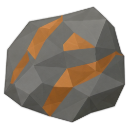 Copper Ore | 150–250 |
| 150–250 | |
| 80–140 | |
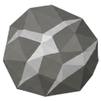 Silver Ore | 70–120 |
| 150–250 | |
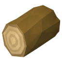 Broadwood Logs | 100–180 |
| 150–250 | |
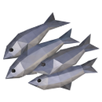 Raw Anchovies | 100–180 |
| 60–110 | |
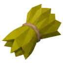 Marrentill | 50–90 |
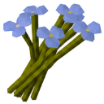 Flax | 150–250 |
| Feather | 100–200 |
| 20–40 | |
| 15–30 |
Rare drops
Rolled separately for each member who receives loot.
| Item | Rarity | Notes |
|---|---|---|
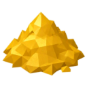 Golden Tool Dust | Uncommon (1 in 50) | |
| Ultra rare | 2 extra loot rolls per clear while it is the active pet |